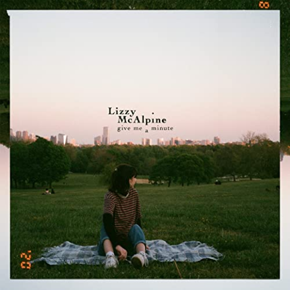

Give Me a Minute — Album (LM1)

Lizzy McAlpine’s first studio album encapsulates the feelings of a dreary fall day of doom and despair. The feelings of loving and losing are perfectly described in songs such as “Apple Pie” and “Nothing / Sad n Stuff.” McAlpine’s folk-inspired indie album is a bitter image accompanied by its sweet harmonic instrumentals.
Favorite track: “Pancakes for Dinner”
The song is upbeat and catchy, capturing the uncanny feeling of going to college and beginning a new chapter.